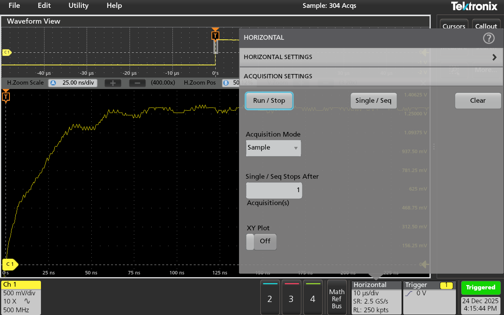
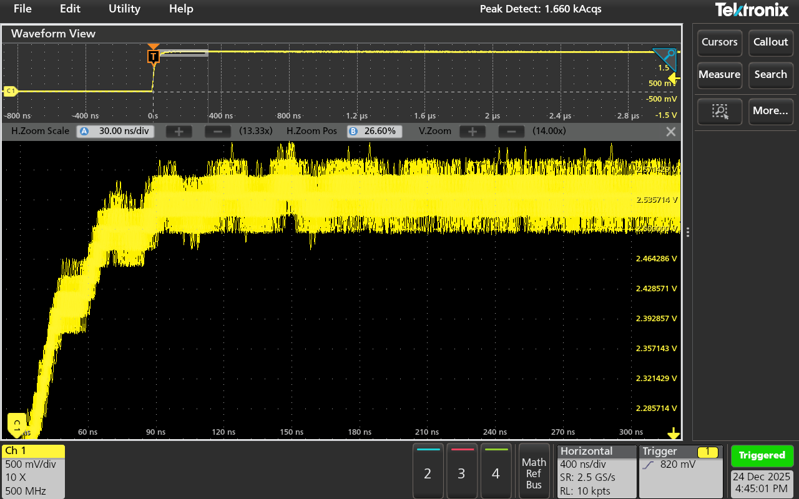
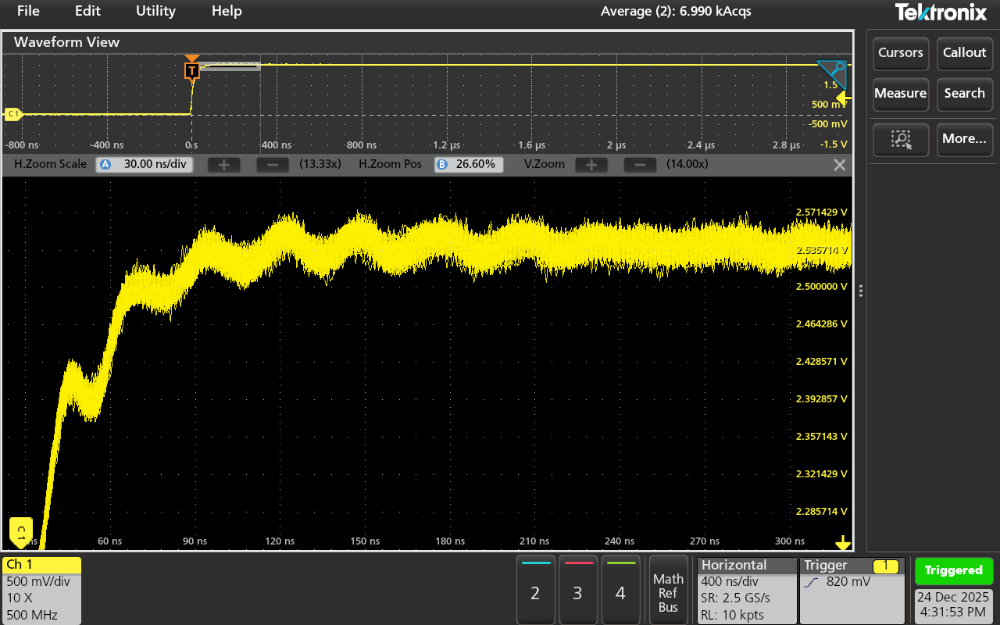
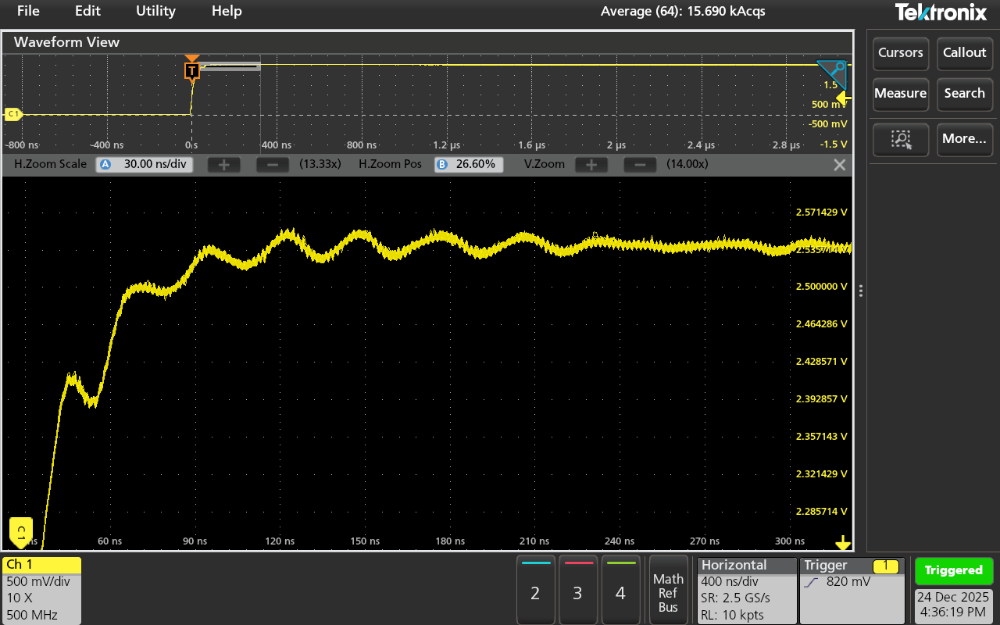
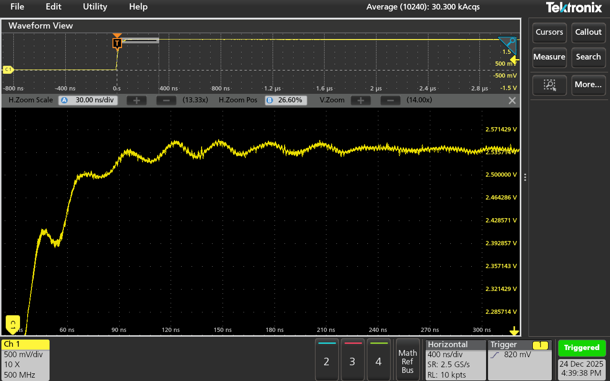
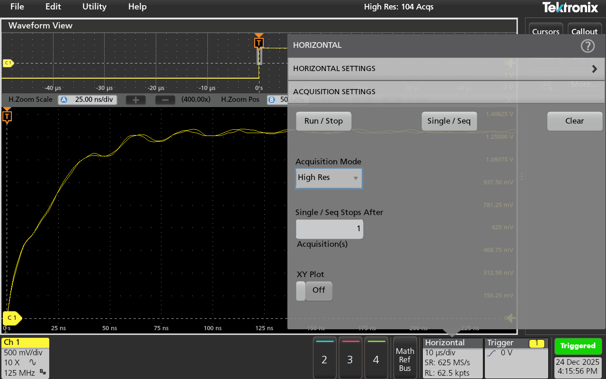
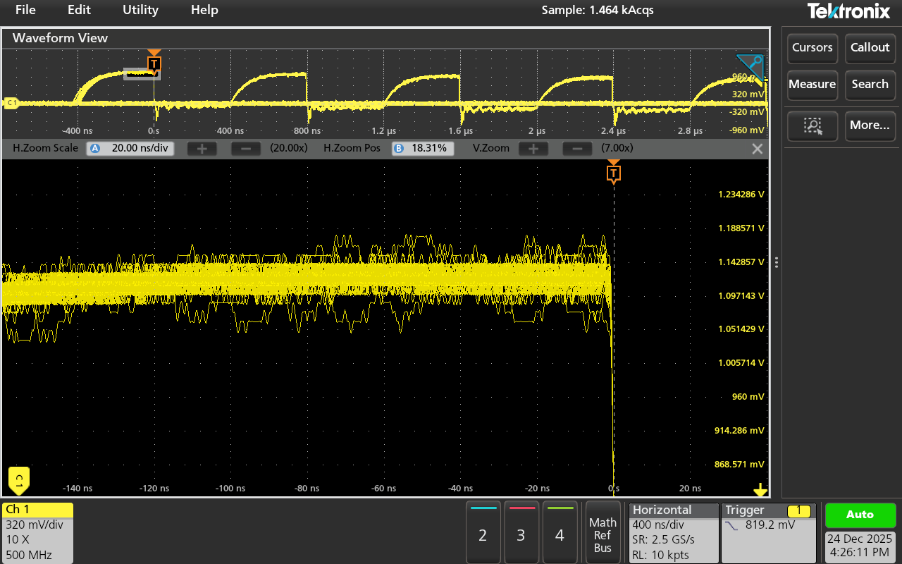

ここで紹介するモードはSample/Peak Detect/Average/High Resです．
Envelopeだけはどういうものなのか説明できないので逃げます．
許してください．
1.Sample
基本的な取り込みモードです．
取り込み性能は本体の取り込みスペックがそのまま反映されます．

パルスのエッジ部に見られるオーバーシュート波形を拡大していますが，少し量子化誤差による波形のガタツキが見られます．
これは8 bitの分解能のオシロスコープであるためかなり顕著に見られます．
ただ波形の外形は掴めているので，基本的に問題はなさそうです．
2.Peak Detect Peak Detectはアクイジション方法が少し特殊です．
これはメモリ長も制限などによってサンプリングレートが落ちている時にその能力を発揮します．
時間軸(s/div)を大きくして10 kSa/sまで落ちていると仮定します．
Sampleモードでは単純に1秒間に10,000サンプルしか取れません．
ここでPeak Detectモードを使うと2つの隣り合ったサンプル間を最大サンプリングレートで取り込み，その最大値と最小値をサンプル点とします．
これによって異常波形を確実に取り込みできる，というわけです．
その特性上，見かけのリプル振幅は大きくなります．

3.Average
これはサンプル点を平均し続けるモードです．
荒ぶりがちな波形を安定させられ，また外部からノイズの振幅を小さくできます．
ただこれは見かけ上のものであって，波形の忠実性は失われててしまうので注意が必要です．
異常波形や突発波形を取り込むというよりは，定常的に存在する小さな振幅の信号を見やすくするためのモードと思って問題ないと思います．
平均値を求め続ける以上，機種によっては動作がモッサリしますがMSO24はへっちゃらでした．すげぇ

左側が2回，右側が64回の平均値を取っています．
2回のものではノイズ性能が多く見えてみますが，64回のものでは定常的な小振幅の信号が見えています．

さらに回数を10,240回まで増やすとさらにノイズ成分が少なくなります．
Averageモードは使い方に左右されますが，なかったらなかったで困るモードです．
4.High Res
何かしらの処理を通してADCの電圧分解能を向上させるモードです．
何らかの処理というのは，平均処理なのですがAverageモードとは一味違います．
Averageモードは定常的な波形にしか使えませんが，High Resモードは突発波形にも使えます．
Peak Detectモードで言った，2サンプルの間を最高速度でサンプリングして，その区間の平均値を取ります．
波形がなまったり，時間軸設定によってはサンプリングレートが落ちますが，ノイズを手っ取り早く減らせます．

ノイズは減っていますが波形はなまったように見えます．
ただ，以下のようにノイズに埋もれたオーバーシュートが見えることもあって欠点ばかりではありません．


立ち下がり前のオーバーシュートのような波形は，右側のHigh Resモードでははっきり見えています．
以上，Envelopeを除いた取り込みモードの紹介でした．